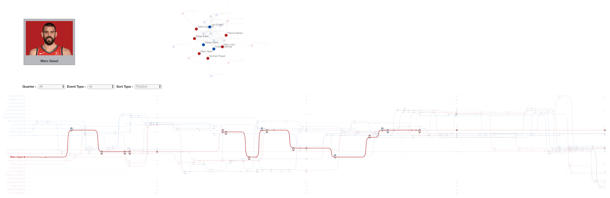
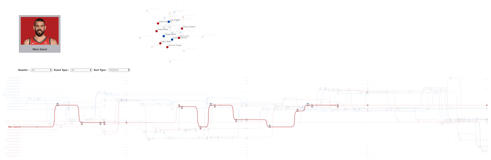

Education
Ph.D. in National Taiwan University of Science and Technology
M.S. in Wuhan University of Technology
2007 - 2011
Computer Science and Artificial Intelligence
Advised by Prof. Yan Hu
B.S. in Wuhan University of Technology
2003 - 2007
Computer Science and Artificial Intelligence
Publication
Visualizing NBA information via storylines
 

Three-dimensional positioning on image point of interest via Google geographic information
Jie Lin, Chuan-Kai Yang and Yi-Fang Kao
Signal, Image and Video Processing, 2024, 18(3): 2763-2771
[Paper]

A Multi-Person Selfie System via Augmented Reality
Jie Lin and, Chuan-Kai Yang,
Pacific Conference on Computer Graphics and Applications (Pacific Graphics), 2020
[Paper]
Collaborative panoramic image generation from multiple mobile phones
Jie Lin and, Chuan-Kai Yang,
IEEE International Conference on Multimedia and Expo Workshops (ICMEW), 2017
[Paper]
Work Experience
- Courses: Data Visualization
- Courses: Machine Vision
- Courses: Design Patterns
Research Field：
- Human-computer interaction
- Machine vision
- Data visualization.
- Define the data dictionary
- Establish business layer interface specifications
- Design the user operation graphical interface
- Implement data transmission and storage as well as module connection operations
- Provide software maintenance and technical support in the later stages
Project
Wuhan Zhongshan Road Tunnel Monitoring System
The Java Development Engineer
This project mainly involves the establishment of a monitoring system platform for an underpass tunnel,
including the installation of necessary equipment and the development of related control software.
My role in the project was as a research and development engineer.
I was primarily responsible for the development of the tunnel fan control software and fire alarm software,
as well as the debugging of related equipment on-site.
Additionally, I completed the later maintenance and technical support of the software,
and provided training and guidance for users at the project site.
The Communication Information Management Support System (CIMS) - NEC Corporation (Wuhan)
The Development Engineer
The Communication Information Management Support System (CIMS) of NEC Corporation in Wuhan
primarily focuses on the management and monitoring of SDH equipment within relevant communication departments.
As a development engineer, I have participated in requirements analysis, system design, coding, testing,
and the writing and organization of documentation materials in the later stages.
In the project, I was responsible for the collection, analysis, organization, and visualization of internal information from the transmission network system.
In the project, I was responsible for the collection, analysis, organization, and visualization of internal information from the transmission network system.